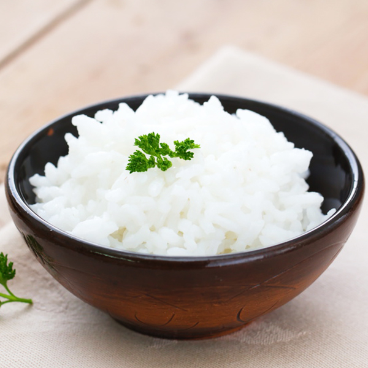

石板大米是世界上唯一的“堰塞湖石板稻米”。其生长环境特殊：生长在由亿万年前火山爆发、岩浆流淌凝固而形成了玄武岩，俗称“石板地”。石板上覆盖着岩石风化和腐殖质沉积形成的沃土，土层约30公分厚，土壤中有机矿物质极为丰富。灌溉用水来自于镜泊湖的优质水源。由于石板地白天吸收了大量热量，夜晚又将热量散发出来，使石板地的地温和水温比一般稻田高出约2-3度，形成了有利于水稻生长的自然环境。
渤海镇位于国家级名胜旅游区——镜泊湖、火山口地下森林、渤海风情园的旅游金三角地区，是著名的“鱼米之乡”，历史上素有“塞北江南”的美誉。
响水大米俗称“石板米”，因其生长在火山玄武岩石板地上而得名。响水大米之所以品质优良，举世无双，完全得益于其生长在世界独一无二的生态环境中。其生长的土地为亿万年前火山爆发时，火山岩浆流淌凝固而形成的大面积玄武岩“石板地”。石板上土壤的厚度约为10-30厘米，是经过亿万年的岩石风化和腐殖沉积而形成的土壤，其中矿物质、有机质、微量元素含量极为丰富。
灌溉水源来自世界第二大高山堰塞湖——镜泊湖流出的牡丹江上游的优质水源，水质纯净、清澈、无任何工业污染。由于石板地的石板在白天吸收了大量的热量，在夜晚又将吸收的热量散发出来，使石板地的地温，水温比一般的稻田地高出了2—3摄氏度左右，在昼夜温差大的北方，形成了有利于水稻生长的自然环境，水稻吸收营养充分，成熟度极高，诸多条件的珠联璧合，使响水大米具备了举世无双的品质和食用价值。
营养品质
石板大米是享誉国内外的绿色天然保健大米，其米粒青如玉、晶莹剔透、质重如砂。煮粥浆汁如乳（胶原蛋白含量高），蒸饭油亮溢香（维生素E含量高）。饭味清香适口，营养价值极为丰富。经农业部谷物品质监督检测中心全程跟踪检验，石板大米中Vb1的含量为每公斤1.4毫克，而普通米仅为0.22毫克，Vb2含量为0.5毫克，普通米为0.06毫克，Vb6含量为17.3毫克，普通米为1.5毫克。并且蛋白质含量适当，为7.26%（普米为6.8%），这个含量既保持了石板大米的营养价值，同时又不影响石板大米的食味品质。由于产地昼夜温差大，因此石板大米所含淀粉中的直链淀粉含量低（16.47%），这种类型的大米焖制出的米饭柔而不粘，质地适中，口感鲜美，并且冷却后不回生。
欧洲权威农产品检验机构荷兰SGS检测中心检测，在石板大米中钙、铁、铜、镁、钾、硒、锌等微量元素含量也极为丰富，其中钙含量每公斤石板大米高达220毫克，为普通大米的3—6倍。其中中氨基酸、维生素及矿物质微量元素的含量远远高于普通大米，在石板大米中富含人体所需的十八种氨基酸，含量达6.9%，在人体所不能合成的八种氨基酸中，石板大米就含有7种。
由唐代以来至宋、元、明、清，东北响水石板大米始终是历朝贡米，为皇室所享用。解放后，东北响水石板大米又成为人民大会堂的国宴用米，曾于1992—1997年连续三届蝉联“中国农业博览会金奖”。
历史渊源
唐代渤海国时期，渤海镇地区已经出现了先进的水利灌溉和水稻栽培技术，据（新唐上书·渤海传）记载，当时渤海国进贡给唐王朝的贡品之中。
 中医认为大米性味甘平，有补中益气、健脾养胃、益精强志、和五脏、通血脉、聪耳明目的功效鉴别方法
望：大米无任何杂质、灰粉、杂色米、霉病米，米粒整齐、均匀、晶莹剔透
闻：闻无任何怪味、异味。稻花香属于外香型大米，大米有清香味。
切：捻摸大米质地坚韧、细腻滑润。两手搓米，会散发出米香。但是手上有一点点香气，如果手上的香气很多，是有香精的大米。
品：米饭筋糯宜口、醇厚略甜。